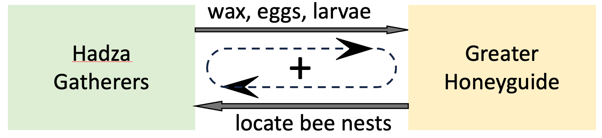
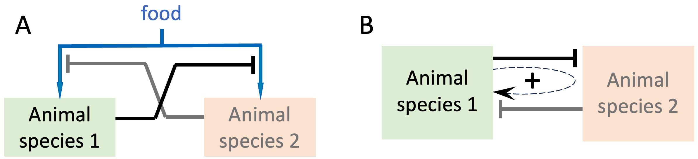
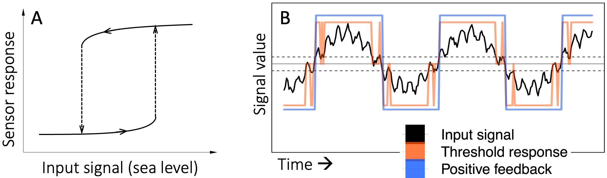
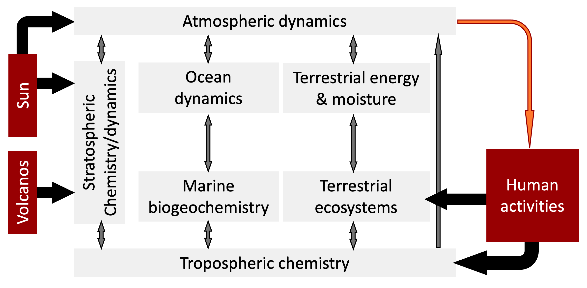
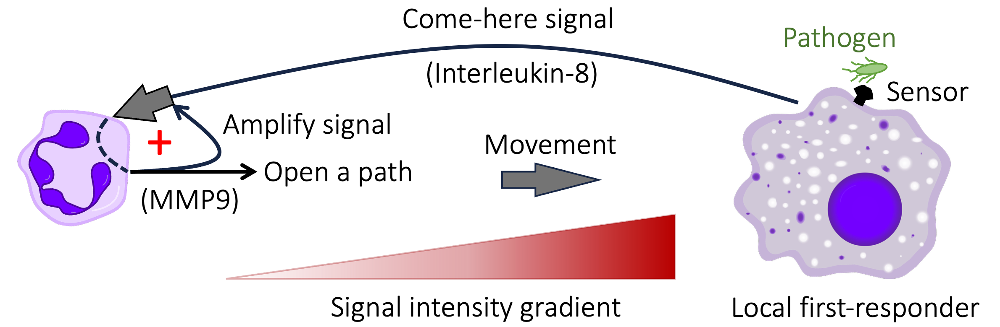

8 Distributed, Multi-Layered Regulation as Governance
We have seen that in human systems RAP can arise naturally from cooperation-competition dynamics, and is an unrestrained version of self-organized pattern-formation via Short-range Activation, Long-range Inhibition (SALI). Of course, intentionally manipulative actors can also instigate RAP. But, even in the absence of Machiavellian scheming, RAP will arise automatically as a result of interactions among the parts of a system. This chapter asks: What exactly is self-organization? And can it be as effective as top-down, centralized governance? In the next Chapter, we will build on the concept of distributed, self-organized systems to show that – from a dynamical systems perspective – RAP and cancer are essentially the same.
In the sections that follow, I will argue that distributed, self-organizing, regulatory interactions are the norm in natural systems 71. I will illustrate my argument by reviewing the fundamental role of regulation in three large-scale, complex, and very different natural processes 72.
Many human interactions do not involve easily measurable quantities such as money or physical force. In the last section of this chapter, I will discuss how we influence and regulate each other through such interactions. But first let me clarify what I mean by regulation.
8.1 Hierarchical Versus Distributed Regulation
When we think of regulation in human societies, we usually think of laws defined and enforced by federal and local governments. Or we may think of how we informally regulate ourselves and others in our communities via social norms 73, customs, and traditions that we voluntarily maintain and live up to 74.
Given the complexity of modern societies and the limitations of representative government, it is not surprising that we sometimes feel that laws are imposed on us rather than (indirectly) developed and enacted by and for us. But in well-functioning democracies, laws are intended to represent the community’s wishes and to facilitate our lives. Viewed from this perspective, social norms, customs, traditions, and laws are parts of a continuum of contracts that we create among ourselves so that we can live equitably and productively in large, complex societies. More specifically, as we have seen, the usefulness of self-initiated and self-managed cooperative interactions declines as the number of people we interact with increases. Government defined and enforced laws allow us to maintain cooperative interactions in much larger societies. We would not want to walk/bike/drive in a city without traffic laws.
In well-functioning democracies, formal laws enable the regulation of the behavior of all members of the society by the majority. So, at least in idealized democracies, laws are a form of indirect community self-management. In contrast, social norms, customs, and traditions are distributed regulatory mechanisms that evolve over time, and are enforced by the community through direct person-to-person interactions, and also through indirect mechanisms such as gossip, reputation, social-standing, etc.
Outside the animal kingdom, the behavior of natural systems is also self-regulated in a distributed manner through interactions among the system’s parts. Such systems may be organized in a hierarchy of modules, but they do not have central governing bodies that impose and enforce laws. Instead, natural systems evolve to have distributed forms of regulation. In such systems, each part of the system receives a set of regulatory cues from the others, modifies its behavior accordingly, and outputs one or more cues of its own. Such interaction will continue until all the parts settle into mutually-agreeable states (where the current inputs do not lead to a change in the component’s internal state or output).
For example, changing internal pressures may force a rupture in the earth’s crust and create a volcano. Volcanic eruptions then release some of the internal pressures until a new steady-state is arrived at, without any external mediation.
8.2 Distributed Regulation Via Feedback
Distributed regulatory interactions can either form chains like dominoes, or they can circle back to their starting point and form feedback loops. Domino-like interaction chains perform many essential information-processing functions such as integrating signals from multiple sources, filtering signals to extract relevant and reliable information, and broadcasting local state changes to other system components 1,2. Feedback loops, on the other hand, enable reliable responses to changing conditions in the presence of natural variabilities.
Symbiotic relationships (e.g. between plant roots and fungi) are a good example of distributed (in this case mutual) regulation. To see how symbiosis amounts to mutual regulation, consider the relationship between the Hadza hunter-gatherers of northern Tanzania and a local bird species called the Greater Honeyguide.
In peak season (March-May), about 20% of all food collected by the Hadza is honey 3. They can do this because wild, free-living Honeyguides literally call out to them and guide them to the locations of hives in the local trees. After the Hadza expel the bees and harvest the honey, the Honeyguides eat the eggs, larvae, and beeswax in the nests.
A 2014 study 3 found that Honeyguides increased the Hadza’s rate of finding bee nests by 560%. Overall, Honeyguide help contributed about 10% of the total energy intake of the Hadza. The study also discovered that the Hadza have developed ways to make Honeyguides more dependent on them, and to encourage bees to repopulate harvested hives, thus creating long-term and sustainable symbiotic and predator-prey relationships.
Put another way, help from Honeyguides determines the rate at which the Hadza harvest honey. Conversely, the Hadza’s help determines the rate at which Honeyguides can access bee eggs, larvae, and wax. In effect, each partner in this symbiotic relationship regulates the feeding efficiency of the other. Note that by helping each other, the partners in this symbiotic relationship are also (indirectly) helping themselves. The Honeyguide and the Hadza have each created a positive feedback regulatory loop that improves both their livelihoods, as shown schematically in Figure 8.1.

Figure 8.1. By improving each other’s access to food, the Hadza hunter gatherers and the Greater Honeyguide create a mutually beneficial positive feedback loop (indicated by the dashed loop and arrowheads).
Competition for a limited resource is another form of distributed regulation. A simple example is two or more species competing for the same food. Each participant in such a competition negatively regulates the success rate of its competitors. If we assume that less competition allows access to more food and greater population growth, then inhibiting a competitor is equivalent to increasing one’s own population growth rate, i.e. a positive feedback loop, as in Figure 8.2.

Figure 8.2. Interactions regulating the population-sizes of two animal species competing for a limited amount of food. A. If food availability determines a species’ growth rate, then by inhibiting the other species’ access to food, each species can increase its own population growth rate, creating a positive feedback loop. In panel B, this effect is schematically shown for Species 1 as a positive feedback loop (dashed loop with a positive sign).
In addition to regulation via positive feedback, nature abounds in regulation via negative feedback. As discussed in Chapter 2, negative feedback can be used to constrain a variable quantity to a fixed level. For example, we sweat to keep our body temperatures from rising.
So far, we have seen three examples of regulation via feedback. Wouldn’t ‘hard-coded’ (pre-specified) regulation by diktat be more straight-forward? The short answer is no. To see why, suppose we want to set the temperature in a room to a constant 72 degrees Fahrenheit. A naive approach would be to turn on the cooling system anytime the room temperature exceeds 72 degrees, and turn on the heating system anytime the room goes below 72 degrees. Such a system would oscillate endlessly between heating and cooling the room. It would be both inefficient and annoying. A more efficient solution would be to change the rate (amount per unit time) of heating/cooling in proportion to the difference between the room temperature and the desired temperature, which is a negative feedback loop.
Now consider trying to sense ‘relevant’ changes in a quantity with multiple sources of variation. Suppose for example that an unusually inquisitive sea urchin wants to know whether the tide is in or out. One solution would be to sense whether the level of the water is above or below a threshold. But waves and seasonal variations would make this approach error-prone, especially in shallow tidal waters. An improved solution would be to have two thresholds, one for detecting low-tide and another, higher threshold for detecting high-tide. But, as illustrated in Figure 8.3 waves continue to make this approach error-prone near the high- and low-water thresholds.
Positive (change-reinforcing) feedback resolves this issue by remembering the immediate past. In a sensor using a positive feedback loop the threshold for switching from a previously high output to a low output is usually lower than the threshold for switching from low to high (see Figure 8.3A). The result is a more reliable sensor that is not easily fooled by waves (see blue line in Figure 8.3B)

Figure 8.3. A positive feedback loop provides a more reliable means of detecting high and low levels of a noisy signal compared to simple thresholding. A. In a positive-feedback sensor, the threshold for sensing a change from low to high (upward dashed arrow) is higher than the threshold for sensing a change from high to low (downward dashed arrow). B. The black curve represents the hypothetical level of water at a point in a tide-pool. The low-frequency variation represents tidal movements, and the high-frequency variation represents waves. The dashed horizontal lines mark thresholds between which it is hard to distinguish the effects of tides and waves. The jagged coral-colored line shows the response of a sensor using these two thresholds to distinguish high-tide from low-tide. The jagged portions of the line are erroneous detector outputs due to interference by waves. The blue square-wave shows the response of a positive feedback sensor using the same thresholds. For ease of viewing and legibility, I have plotted each of the three curves on a different scale along the vertical axis.
To summarize, regulation by diktat is like dominoes. Its actions are predefined, so natural variability can result in system failures. In contrast, feedback regulation is context-sensitive, and is therefore better able to cope with noisy conditions.
Note that feedback loops can be indirect, acting via one or more intermediaries. For example, if a plant species out-competes a rival that is host to pollinators, then winning more turf results in less pollination, creating an indirect self-limiting negative feedback loop.
If you are still not convinced about the merits of distributed regulation by feedback, imagine hammering a nail in. After a first strike, we typically (often subconsciously) check to see if the nail is perpendicular to the surface. If it isn’t, we angle our subsequent strikes to correct our mistake. In other words, we use negative feedback to regulate the angle at which the nail goes in.
In short, positive and negative feedback loops provide more reliable means of regulating downstream actions and behaviors than mechanisms without feedback (what engineers call open-loop systems). Accordingly, positive and negative feedback loops are the key mechanisms of regulation in systems that change and adapt to conditions (evolve) over time.
When we look at network diagrams of systems, we can therefore expect to see a combination of direct and indirect feedback loops that respond to changing conditions inside and outside the system. We will also see interaction chains that sense, filter, and integrate information collected from other parts of the system, and additional interaction chains that broadcast the output of feedback loops to other parts of the system. I will come back to these concepts when I discuss approaches to combating RAP.
8.3 Evolution Optimizes Regulation in Natural Systems
We are all familiar with Darwin’s theory of evolution as a self-organizing process that governs how biological organisms behave and interact with each other and with their environments. While biological evolution is now widely accepted 75, the idea that inanimate natural systems are also regulated via evolving mutual interactions is relatively new.
Life and rocks have co-evolved. […] Biology plays a huge role in the evolution of minerals.
Robert Hazen, 2019 4
Over the past two decades, the mineralogist Robert Hazen has brought together a diverse group of experts to explore and define how non-living systems evolve 5–7. They find that the evolution of non-living systems is similar to the evolution of living systems 8. First, diversity is generated as conditions change and existing materials move, combine, or split to create new materials, structures, and processes. Next, diversity is pruned through selection of variants that are best suited to survive given their interactions with everything else.
Importantly, Hazen and collaborators conclude that such evolution of complexity works on physical entities and also on the (regulatory) interactions and processes that they take part in. If two or more interacting processes stabilize each other, then they are effectively selected for and survive, whereas processes that find no synergies will decay and disappear.
Natural systems evolve towards stable (mutually acceptable) interactions among their components. And as we have seen already, the best way to get reliable behaviors (interactions) is through feedback loops. The rest of this chapter provides a few examples to illustrate the generality of this principle.
8.4 Regulation of the Earth’s Climate
The entire surface of the earth including life is a self-regulating entity[…].
James Lovelock, 1979/2000 9
The Gaia Hypothesis, the idea that the earth as a whole is a giant highly-regulated system that has co-evolved with life and sustains it, was first proposed in a short note by James Lovelock in 1972 10 and later expanded with Lynn Margulis in 1974 11, and in Lovelock’s 1979 book (republished in 2000) 9.
In its original formulation, the Gaia Hypothesis was criticized for various inconsistencies 12, but its ideas led to the emergence of Earth Systems Science as a distinct scientific disciple concerned with understanding the structure and functioning of the Earth as a complex, adaptive system 13.
The Biosphere, defined as everything on Earth where life dwells, has been a subject of research and modeling at least since Vladimir Vernadsky’s 1926 book The Biosphere 14. Vernadsky argued that interactions between the inanimate planet and life have shaped and continue to shape each other. However, because of the limited amounts of data available at the time, Vernadsky emphasized that his proposals were ideas and not yet formal hypotheses or theories.
A turning point came sixty years later, in the form of a landmark report by a NASA Advisory Council 15, which defined a multi-decade, multi-agency research program in Earth Systems Science. A highly simplified version of one particular figure in the NASA report is shown in Figure 8.4. The figure shows the key drivers of the interactions between the biological and physical parts of the earth’s climate system. The original figure has over 50 interacting components.

Figure 8.4. A simplified view of the biological and physical interactions in the earth’s climate. The three external inputs (sources of perturbation) to the system are highlighted in red.
The reason I am including this figure here is to point out that there are only a few external inputs (i.e. sources of perturbation) to this system: radiation from the Sun, volcanic activity, and human activity. A very large meteorite hitting the earth could also change the global atmosphere. But the probability such an event is very low.
For the vast majority of its life, the earth has been going through major transformations that have repeatedly and dramatically changed its climate. These include the emergence of oceans and atmosphere, the arrival of single-celled life, the increase in oxygen levels, the evolution of multicellular life, the emergence and shaping of the continents, and so on. Some of these changes – e.g. the formation of solid land – were simply the consequences of earlier states (e.g. the cooling of the earth). Some other changes were driven by external events such as large meteors. But the earth’s climate has also changed because of the many interactions among the earth’s parts. For example, oxygenation of the earth’s atmosphere was driven by the emergence of life, and in turn, an oxygen-rich atmosphere led to an explosion of life on earth 16,17.
The earth’s climate system involves an enormous number of components and an even bigger number of interactions among these components. Modern earth-systems-scale climate models are typically hundreds of thousands of lines of code 18. The size of the models, and the complexity of all the interactions they capture 19, makes it very difficult to say that any given phenomenon is due exclusively to one or more specific mechanisms. However, in studies where mechanisms have been characterized in detail, the key regulators of the earth’s climate have turned out to be positive and negative feedback loops 20–24. For example, the so called “ice albedo” effect involves a positive feedback loop in which ice and snow cover reflect the sun more efficiently and reduce the temperature, while melting ice and snow reduce reflectivity and cause further warming 25–28. As an example of a negative feedback loop, plants use carbon dioxide (CO2) to photosynthesize, but the more CO2 they use up, the less CO2 is available for their further growth 29.
8.5 Distributed Regulation in the Human Immune System
The human immune system is another immense product of natural evolution. The body of a “reference human”, assumed to be between 70 and 75 kilograms in weight (roughly 155-165 pounds), is estimated to have about 30 trillion genetically-human cells, of which about 70% (about 25 trillion) are red blood cells 30.
Note that I referred to “genetically-human” above because the human body actually contains more microbial cells (e.g. 38 trillion bacteria 30) than what we normally consider “human cells”. These microbes have essential functions in our digestive and immune systems. We could not live without them. So, we should really think of these microbes as human cells, and of human bodies as super-organisms hosting multi-species ecosystems.
Red blood cells are highly specialized cells that deliver oxygen from the lungs to the rest of the body and return carbon-dioxide from cells back to the lungs. Early-on in their development, red blood cells lose many of the structures, functions and capabilities present in other cells. Setting aside red blood cells and symbiotic microbes, more than one third of genetically-human cells in our bodies (about 1.8 trillion 31) are immune cells. That is roughly 10 times more than the number of neurons in our brains 32,33.
The immune cells in our bodies comprise dozens of specialized cell types, each with their own complex set of regulatory interactions and behaviors. For brevity, I will focus on the most common immune cell type in the body, neutrophils, in part because these cells are usually the first line of defense against infections and wounds. They are the body’s first-responders. If you have ever seen a video of an immune cell furiously chasing a microbe, eventually catching it and gobbling it up, the immune cell was very probably a neutrophil. If you haven’t seen this, I recommend you search online videos for “neutrophil chasing a bacterium”.
Even in the absence of any major immune events, our bodies typically make around 70 to 75 billion new neutrophils per day 34,35. This is because neutrophils carry an arsenal of anti-microbial biochemical weapons and so must be carefully disposed of before they develop any age or activity-related defects 36,37. As a result, individual neutrophil cells typically only live for less than one day.
Like all immune cells, neutrophils are produced in the bone marrow, where a set-aside pool of stem cells continually and indefinitely divide to produce new blood cells. This process is intricately regulated by signals from across the body indicating the level of demand for neutrophils. Over a period of about 10 days, newly born blood progenitor cells that receive a particular combination of signals from the body differentiate into neutrophils.
Mature neutrophils are kept in reserve and released into the bloodstream in a controlled manner that is coordinated with the body’s circadian rhythm. In a striking demonstration of just-in-time inventory management and on-demand delivery, in the event of an infection or injury, the number of neutrophils released into the bloodstream can go up by as much as ten-fold and the lifespan of neutrophils can increase by seven-fold 35.
In the absence of infections and injuries, day-old neutrophils activate a highly-orchestrated cell-death program and signal to specialized immune cells to find, digest, and recycle them 38. The process also triggers signals indicating a need to replenish the neutrophil pool.
When we get an infection, the infected cells and nearby immune cells initiate a cascade of signals, which trigger the release of increased numbers of neutrophils into the bloodstream 39. Near the site of the infection, sticky proteins on the surface of blood vessel cells grab the circulating neutrophils. The neutrophils then squeeze their way through the blood vessel walls and into the infected tissue, and using various chemical cues, locate and destroy both the pathogens and the infected cells.
I list all these steps here to emphasize that the process involves a long and complex sequence of events that require neutrophils to respond appropriately to a great many regulatory cues generated by infected cells, other immune cells, and “bystander” cells that guide the neutrophils to the infection and trigger various behaviors. It really is a community-effort, and it is all self-organized.
A large number of feedback loops regulate the process I have just described. Here, for brevity, I will describe just a couple of example feedback loops.
In the absence of injury/infection, the steady-state generation of neutrophils in the bone marrow is controlled by a growth-factor that coordinates the proportions of immune cells being generated in the bone marrow. Neutrophil-progenitor cells sense and respond to this signal via a sequence of biochemical reactions. The sequence includes a negative feedback loop that limits cell growth 40,41, thus fixing neutrophil production to a low, constant rate.
In contrast, the response of neutrophils to infection and injury involves at least two positive feedback loops. The protein that acts as a neutrophil attractant causes neutrophils to secrete a protein that amplifies the strength of the signal by as much as thirty-fold, while also clearing a path across the extra-cellular matrix to facilitate the movement of the neutrophil towards its target (see Figure 8.5). Later, when the first neutrophils arrive at the scene of the infection/injury, they release a signal that attracts a swarm of additional neutrophils to the site, thus reinforcing the initial signal from the infected cells 42.

Figure 8.5. A positive feedback loop greatly increases the ability of neutrophils to migrate to sites of infection. Infected cells and patrolling immune cells that detect pathogens (at right) release multiple chemicals that ‘raise the alarm’ and mark the location of the infection. The concentration gradient of one such chemical (known as Interleukin-8) acts as way marker for neutrophils. After initially detecting Interleukin-8, neutrophils (purple cell at left) release an enzyme (called MMP9) that amplifies the signal 10-to-30 fold, creating a positive feedback loop (marked by the red + symbol). At the same time, secreted MMP9 digests sticky extracellular structures to facilitate the movement of neutrophils. Cell icons in the figure are from Wikimedia: commons.wikimedia.org/wiki/File:Macrophage.svg and commons.wikimedia.org/wiki/File:Neutrophil.svg.
{kind=link}
{kind=link}
8.6 Regulation of Ecological Systems
In Chapter 4, we saw examples of how regulatory interactions within ecological systems can create various stable patterns. Here, I want to emphasize that, in ecological systems as elsewhere, distributed regulation is the norm, not the exception, and positive and negative feedback loops abound 43.
Many regulatory interactions in ecological systems are direct and easy to see. For example, predators consume and therefore reduce the number of prey (an inhibitory regulatory relationship). At the same time, the number of predators goes up and down in proportion to the number of prey, i.e. the abundance of prey positively regulates predator numbers. Together, these two cause-effect relationships form a negative feedback loop.
In real-life additional factors such as the spatial distribution of the two populations, safe-havens for the prey, and delays between predator-prey encounters and downstream effects, can lead to complex population dynamics. But in every case, it is clear that the two populations regulate each other’s abundance.
In contrast to the straight-forward predator-prey relationships described above, regulatory interactions in other ecological systems can be complicated by indirect and external events. For example, interspersed patches of savannas and forests in neotropical Central and South America have been shown to arise as alternative steady states of a single ecosystem. Briefly, animals eating grass or tree branches shape an area’s susceptibility to fire. The resulting non-random localized fires then create savannas and forests as alternative states of a single ecosystem 44. Many additional factors can regulate the fate of such systems. With respect to fires, the physical composition (e.g. woodiness, moisture retention ability) and shape of vegetation (e.g. height and spread of tree canopies) in an area can regulate the frequency and intensity of fires 45.
Plant-soil feedbacks are another common form of ecological regulatory feedback, and are a growing area of ecological research 46,47. Such feedbacks can be both positive and negative. For example, by fixing Nitrogen in the soil, legumes can increase the growth rate of other plants in the same area. The resulting increased plant diversity in turn enriches the soil and improves legume growth 48. On the other hand, root pathogens in the soil limit the growth of dominant plant species more than other species, creating a growth-restraining negative feedback 49 that helps maintain plant diversity. Greater ecosystem diversity has frequently been found to increase robustness to adverse perturbations 50,51, so the observed positive and negative feedback loops are likely evolutionary adaptations.
8.7 Regulation in Undirected Human Interaction Networks
Similar to the above examples, human interactions also regulate human behavior. But the effects of human interactions can be indirect, subtle, delayed, complex, and context-dependent. So, in general, analysis of cause-effect in human interactions has to be based on simplifications such as averages taken over time, categories of people, or in specific settings.
To be sure, in some human interactions, cause and effect relationships are straightforward, for example when one company contracts another company for some goods, there is clearly a demand signal that results in a series of actions to fulfill the original demand.
Sometimes human interactions have a clear cause-effect direction, but the extent to which an interaction has an effect, and the exact form of that effect can be hard to pin down. For example, when someone subscribes to Elon Musk’s posts on X, they may be doing so as a follower of his ideas, or they could be a journalist or politician tracking Musk’s posts for professional reasons. Then again, the subscriber might be someone who lives near a SpaceX launch site or an xAI processor-farm and monitoring Musk for local news. A common way to represent such interactions is to give each interaction type a distinct network edge. So, if a subscriber to Musk is a politician who also lives next to a SpaceX launch site, we can represent Musk’s influence on the subscriber by two arrows, one for the political aspects of Musk’s posts, and another for the local impact aspects of Musk’s posts. Such qualitatively different interactions can have important implications for analysis. But, once identified, they are easy to address, and need not concern us further.
In addition to being qualitatively different, interactions can also vary in terms of the strength of their impact. For example, if we are interested in analyzing the extent to which Elon Musk’s posts influence his followers, we can assign a high weight to his links with members of his fan club, and a low weight to the effects on skeptics who follow Musk but are not strongly affected by the content of Musk’s posts. When appropriately scaled and defined, such interaction weights can represent the level of influence of a message on recipients. For example, directed interactions on social media can be viewed as regulatory inputs of varying strength. And when they form a circular chain of arrows, they add up to a feedback loop.
Undirected online connections, such as between friends on Facebook or LinkedIn, and back-and-forth physical interactions such as dinner-table conversations, can also be thought of as weighted regulatory inputs. In this case, cause and effect must be inferred from the content of individual instances of communications. For example, if I mention a challenge I am facing during a group conversation, and later do something about it inspired by comments by you and others, then to some extent, you played a causal role in my action, even though I didn’t ask your advice personally and you didn’t give me specific instructions. Individually, the effects of such interactions are hard to quantify. But when averaged over a large number of interactions, they can be modeled as weighted regulatory interactions.
To summarize, interactions among the parts of any system, including interactions among humans, form a distributed regulatory apparatus that determines the structure and function of the system as a whole. Self-regulation in natural systems, and self-government in Human Systems are effective, common, and can be nurtured via appropriate social and legal frameworks.
8.8 References
1. Tyson, J. J., Chen, K. C. & Novak, B. Sniffers, buzzers, toggles and blinkers: dynamics of regulatory and signaling pathways in the cell. Curr. Opin. Cell Biol. 15, 221–231 (2003).
2. Alon, U. An Introduction to Systems Biology: Design Principles of Biological Circuits. (Chapman & Hall/CRC, 2007).
3. Wood, B. M., Pontzer, H., Raichlen, D. A. & Marlowe, F. W. Mutualism and manipulation in Hadza–honeyguide interactions. Evol. Hum. Behav. 35, 540–546 (2014).
4. Hazen, R. ASC Science Sundays: Robert M. Hazen - The Story of Earth: How Life and Rocks Have Co-Evolved. (https://www.youtube.com/watch?v=vvsRXWxOX-w, 2019).
5. Hazen, R. M. An evolutionary system of mineralogy: Proposal for a classification based on natural kind clustering. Am. Mineral. 104, 810–816 (2019).
6. Hazen, R. M. et al. Mineral evolution. Am. Mineral. 93, 1693–1720.
7. Hazen, R. M., Morrison, S. M., Krivovichev, S. V. & Downs, R. T. Lumping and splitting: Toward a classification of mineral natural kinds. Am. Mineral. 107, 1288–1301 (2022).
8. Wong, M. L. et al. On the roles of function and selection in evolving systems. Proc. Natl. Acad. Sci. USA e2310223120 (2023).
9. Lovelock, J. Gaia: A New Look at Life on Earth. (Oxford University Press, 1979).
10. Lovelock, J. E. Gaia as seen through the atmosphere. Atmos. Environ. 6, 579–580 (1972).
11. Lovelock, J. E. & Margulis, L. Atmospheric homeostasis by and for the biosphere: the gaia hypothesis. Tellus 26, 2–10 (1974).
12. Kirchner, J. W. The Gaia hypothesis: Conjectures and refutations. Clim. Change 58, 21–45 (2003).
13. Steffen, W. et al. The emergence and evolution of Earth System Science. Nat. Rev. Earth Environ. 1, 54–63 (2020).
14. Vernadsky, V. I. The Biosphere. (Republished 1998, Springer, 1926).
15. Earth System Sciences Committee, NASA Advisory Council. Earth System Science: Overview: A Program for Global Change. (1986) doi:https://doi.org/10.17226/19210.
16. Olejarz, J., Iwasa, Y., Knoll, A. H. & Nowak, M. A. The Great Oxygenation Event as a Consequence of Ecological Dynamics Modulated by Planetary Change. Nat. Commun. 12, 3985 (2021).
17. Sperling, E. A. et al. Oxygen, Ecology, and the Cambrian Radiation of Animals. Proc. Natl. Acad. Sci. USA 110, 13446–13451 (2013).
18. Méndez, M., Tinetti, F. G. & Overbey, J. L. Climate Models: Challenges for Fortran Development Tools. in Second International Workshop on Software Engineering for High Performance Computing in Computational Science and Engineering 6–12 (IEEE, 2014). doi:10.1109/SE-HPCCSE.2014.7.
19. Cai, Y., Lenton, T. M. & Lontzek, T. S. Risk of multiple interacting tipping points should encourage rapid CO2 emission reduction. Nat. Clim. Change 6, 520–525 (2016).
20. Levemann, J., J, M., Nawrath, S. & Rahsorf, S. The Role of Northern Sea Ice Cover for the Weakening of the Thermohaline Circulation under Global Warming. J. Clim. 20, 4160–4171 (2007).
21. Hawkins, E. & Sutton, R. The Potential to narrow uncertainty in regional climate predictions. Bull. Am. Meteorol. Soc. 90, 1095–1108 (2009).
22. Kump, L. R. & Pollard, D. Amplification of Cretaceous Warmth by Biological Cloud Feedbacks. Science 320, 195 (2008).
23. Hansen, J. et al. Ice Melt, Sea Level Rise and Superstorms: Evidence from Paleoclimate Data, Climate Modeling, and Modern Observations that 2°C Global Warming is Highly Dangerous. Atmospheric Chem. Phys. 16, 3761–3812 (2016).
24. Holland, M. M. & Bitz, C. M. Polar amplification of climate change in coupled models. Clim. Dyn. 21, 221–232 (2003).
25. Flanner, M. G., Sell, K. M., Barlage, M., Perovich, D. K. & Tschudi, M. A. Radiative Forcing and Albedo Feedback from the Northern Hemisphere Cryosphere Between 1979 and 2008. Nat. Geosci. 4, 151–155 (2011).
26. Budyko, M. I. The effect of solar radiation variations on the climate of the earth. Tellus 21, 611–619 (1969).
27. Sellers, W. D. A Global Climatic Model Based on the Energy Balance of the Earth-Atmosphere System. J. Appl. Meteorol. Climatol. 8, 392–400 (1969).
28. Curry, J. A., Schramm, J. L. & Ebert, E. E. Sea Ice–Albedo Climate Feedback Mechanism. J. Clim. 5, 240–247 (1995).
29. Franks, P. J., Adams, M. A., Amthor, J. S., Barbour, M. M. & et al. Sensitivity of Plants to Changing Atmospheric CO2 Concentration: From the Geological Past to the Next Century. 197, 1077–1094 (2013).
30. Sender, R., Fuchs, S. & R, M. Revised Estimates for the Number of Human and Bacteria Cells in the Body. PLoS Biol. 14, e1002533 (2016).
31. Sender, R. et al. The total mass, number, and distribution of immune cells in the human body. Proc. Natl. Acad. Sci. USA e2308511120 (2023).
32. von Bartheld, C. S. Myths and truths about the cellular composition of the human brain: a review of influential concepts. J. Chem. Neuroanat. 93, 2–15 (2018).
33. Herculano-Houzel, S. The Human Brain in Numbers: A Linearly Scaled-up Primate Brain. Front. Hum. Neurosci. 3, 31 (2009).
34. Summers, C. et al. Neutrophil kinetics in health and disease. Trends Immunol. 31, 318–324 (2010).
35. Ley, K. et al. Neutrophils: New insights and open questions. Sci. Immunol. 3, eaat4579 (2018).
36. McCracken, J. M. & Allen, L.-A. H. Regulation of Human Neutrophil Apoptosis and Lifespan in Health and Disease. J. Cell Death 7, 15–23 (2014).
37. Pérez-Figueroa, E., Álvarez-Carrasco, P., Ortega, E. & Maldonado-Bernal, C. Neutrophils: Many Ways to Die. Front. Immunol. 12, 631821 (2021).
38. Strydom, N. & Rankin, S. M. Regulation of Circulating Neutrophil Numbers under Homeostasis and in Disease. J. Innate Immun. 5, 304–314 (2013).
39. Malengier-Devlies, B., Metzemaekers, M., Wouters, C., Proost, P. & Matthys, P. Neutrophil Homeostasis and Emergency Granulopoiesis: The Example of Systemic Juvenile Idiopathic Arthritis. Front. Immunol. 12, 766620 (2021).
40. Kimura, A. et al. SOCS3 Is a Physiological Negative Regulator for Granulopoiesis and Granulocyte Colony-stimulating Factor Receptor Signaling. J. Biol. Chem. 279, 6905–6910 (2004).
41. Croker, B. A. et al. SOCS3 Is a Critical Physiological Negative Regulator of G-CSF Signaling and Emergency Granulopoiesis. Immunity 20, 153–165 (2004).
42. Lammermann, T. et al. Neutrophil swarms require LTB4 and integrins at sites of cell death in vivo. Nature 498, 371–375 (2013).
43. Pausas, J. G. & Bon, W. J. Feedbacks in ecology and evolution. Trends Ecol. Evol. 37, 637–644 (2022).
44. Danta, V. de L., Hirota, M., Oliveira, R. S. & Pausus, J. G. Disturbance maintains alternative biome states. Ecol. Lett. 19, 12–19 (2016).
45. Schwilk, D. W. Flammability Is a Niche Construction Trait: Canopy Architecture Affects Fire Intensity. Am. Nat. 162, (2003).
46. Gellnera, G., McCanna, K. & Hastings, A. Stable diverse food webs become more common when interactions are more biologically constrained. Proc. Natl. Acad. Sci. USA 120, e2212061120 (2023).
47. Bennett, J. A. et al. Plant-soil feedbacks and mycorrhizal type influence temperate forest population dynamics. Science 355, 181–184 (2017).
48. Fornara, D. A. & Tilman, D. Ecological mechanisms associated with the positive diversity–productivity relationship in an N-limited grassland. Ecology 90, 408–418 (2009).
49. Goossens, E. P., Minden, V., F, V. P. & Venterink, H. O. Negative plant-soil feedbacks disproportionally affect dominant plants, facilitating coexistence in plant communities. Npj Biodivers. 27 (2023).
50. Yuan, M. M. et al. Climate warming enhances microbial network complexity and stability. Nat. Clim. Change 11, 343–348 (2021).
51. Forero, L. E., Kulmatiski, A., Grenzer, J. & Norton, J. M. Plant-soil feedbacks help explain biodiversity- productivity relationships. Commun. Biol. 4, 78 (2021).